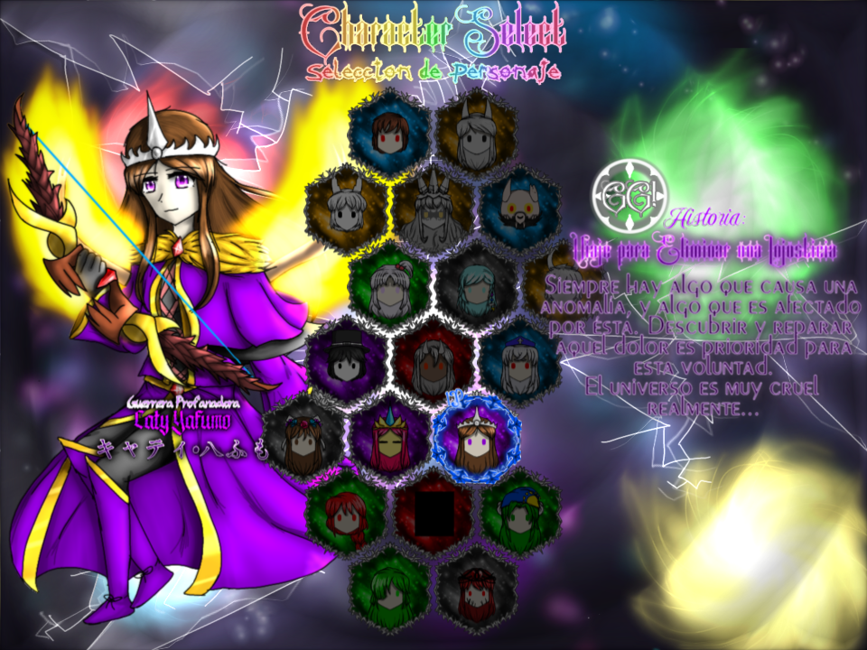
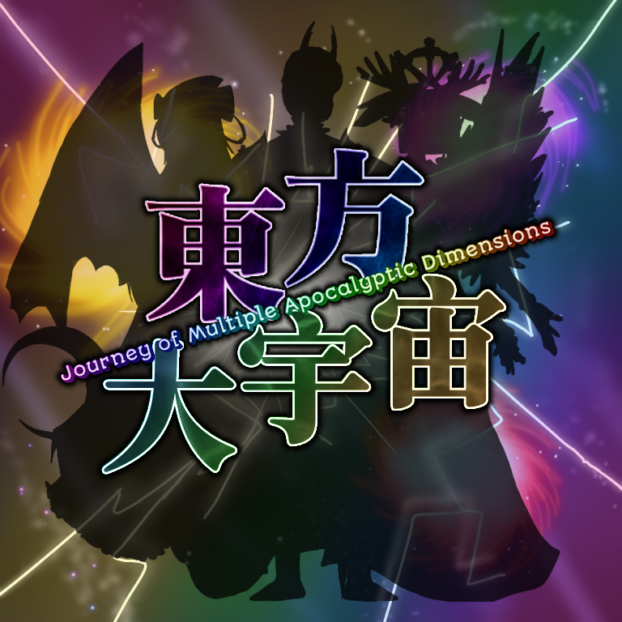

Journey of Multiple, Apocalyptic Dimensions (abbreviated as JoMAD) is a mod for Touhou 19 UDoALG - Unfinished Dream of All Living Ghost, its development started since May 2024 and was finally released on May 31st, 2025 (exactly one year since it's start). This is the only mod in the saga for a Phantasmagoria-like game, and replaces everything from the original game.
This mod is called the "multicrossover" since it was initially conceived as a compilation, this means it mixes all the rest of mods to create a related story. With the lore of this mod, all Caty-Sumi AUs become one Universe, which is divided into different dimensions.
You can select a total of 19 characters, each with its own story mode, however, if you are new on the game, you will only have one single unlocked character to start the story mode. If you clear the story mode, you unlock more characters.
Due to being a "compilation", there is a defined amount of characters from every game and dimension:
On story mode, you beat enemies to fill your gauge while fighting against a bot who can send boss attacks to your side, if you beat enough attacks from the boss you clear the stage and get an additional ability card. On vs mode, it's literally a battle to death against the second player by filling the gauge and sending attacks to the other side.

Below of that, there is a special mechanic called the "interaction": Several characters attack with different patterns against specified characters and circunstances.
Then there's the Last Word mode, it enables if you fight against the same character you are controlling and you send a max level boss attack, these last words allows bombs, gauge attacks and shield dodges, but not misses.
By the negligence of a powerful God, the Universe fell in chaos, the dimensions were united, the reality was twisted and lifeforce glitched. The God can no longer fix it by itself, this is how the restoration plan was devised: To seek out the most powerful beings in the Universe to join forces and repair the macrocosm.
The God's apprentice was in charge to do it, hopefully, he has friends across the dimensions who will help him. But nobody is cappable of control the whole Universe, much anger, panic and confusion spread from it...
This mod replaces all of the tracks, including the title theme and pre-battle themes.
Authors:
This mod has had various changes on its sountrack.

Kanji: 東方大宇宙
Type: Mod, Full
Release: May 31st, 2025
Developers: Dark Caty, Mint, Neo Nickz
Dimension: All
Music: FalKKonE, Ssbbmaster, DM DOKURO, Sin X Nad, Jamie Christopherson, Duv
Credits: ZUN, Calamity team, Re-Logic, Team Cherry
Languaje: Span-English